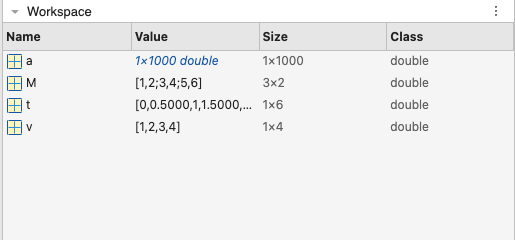
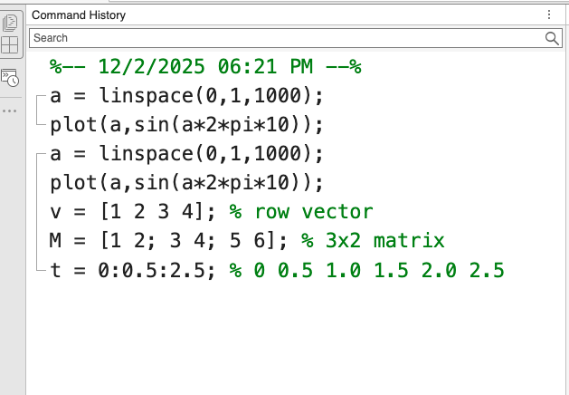
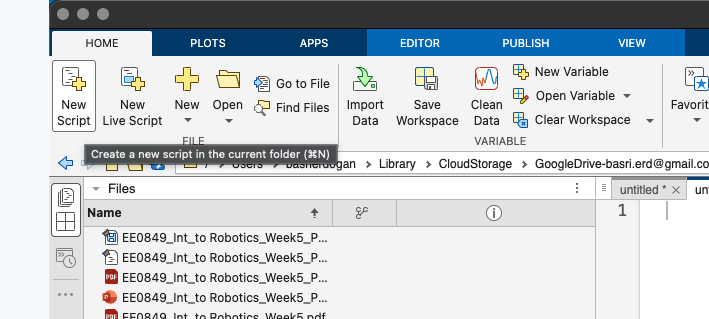
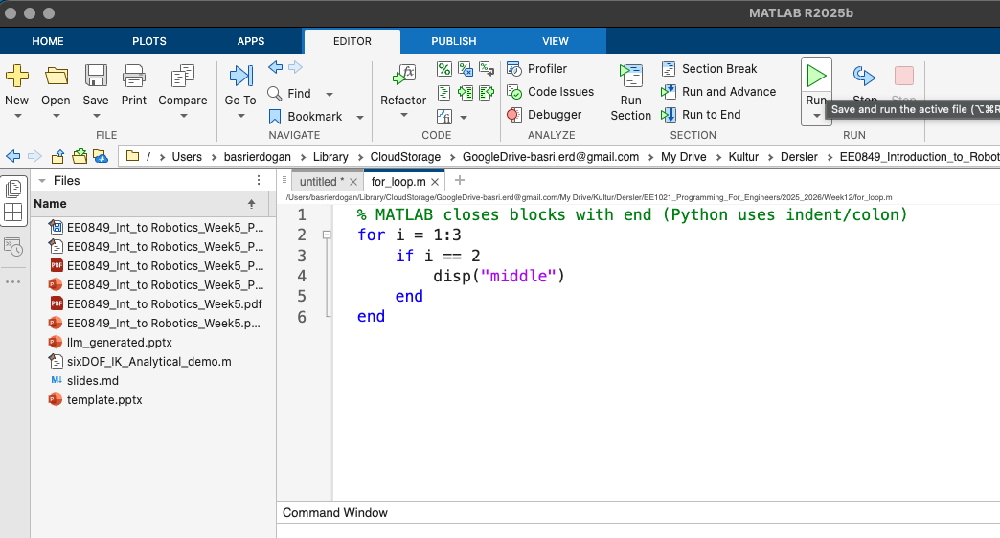
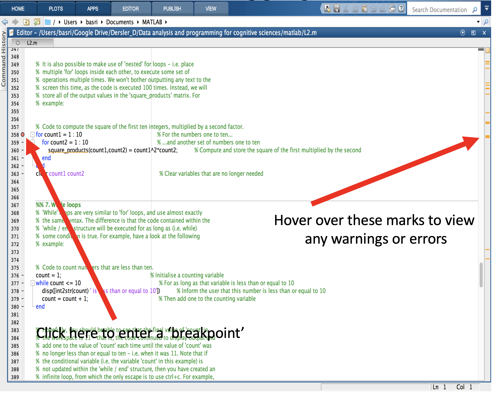

EE1021 Programming for Engineers - Lecture 12
Focus today: quick wins with the command window, tidy variables, fast matrix work.
Python → MATLAB quick wins:
() for access, end closes blocks.; suppresses output; ans holds unnamed results..* / ./ for element-wise; * for matrix mult..mat; functions live in their own .m file.end to close blocks.=; unnamed output goes into ans.; to suppress printed output (Python only prints when you call print).clear (all) or clear name._ only.pi, i/j, inf, nan, eps.start:stop or start:step:stop..* and ./ for element-wise; plain * and / for matrix math.A(n) or A(row,col); rows first, then columns.A(row,:), A(:,col), A(:) to flatten.() not [], and element-wise uses .* (NumPy’s default is element-wise).who lists current variables from the command line.
clc clears the command window; history stays.
mean, std, plot, sum, linspace, etc.ans.mean: compute meanstd: compute standard deviationmin / max: min/max valuesrand / randn: random numbersPython parallels: mean/std/min/max ~ numpy.mean/std/min/max; rand/randn ~ np.random.rand/randn; find(cond) ~ np.where(cond); size(A) ~ A.shape.
save mysession (creates mysession.mat in current folder).load mysession; watch for name collisions.save/load writes .mat (like pickle/np.save); loading can overwrite variables in the base workspace.help function for quick docs; doc function for full examples.demo shows built-in walkthroughs.doc func ~ help(func); use which func to see the file being called (like inspect.getfile).' ' (double quotes give string scalars; both differ from Python’s list of chars).int2str and num2str convert numbers to strings, for display reasons.disp displays a string in the MATLAB command window.{ }.{ }, then index inside with ().struct.field.Ctrl+N, or File -> New -> Script..m files that run top-to-bottom.

%; block comments: %{ ... %}.%% to split code into runnable cells (Ctrl+Enter).... to continue.Ctrl+C stops a runaway loop.if, one for, then expand.Relational
| op | meaning |
|---|---|
== |
equal to |
< |
less than |
> |
greater than |
<= |
less than or equal to |
>= |
greater than or equal to |
~= |
not equal to |
Logical
| op | meaning |
|---|---|
&& |
logical and |
|| |
logical or |
& |
element-wise and |
| |
element-wise or |
1:n).% File: summarize_readings.m
function [avg, spread] = summarize_readings(readings)
if nargin == 0
error("Need readings input");
end
avg = mean(readings);
spread = std(readings);
endsummarize_readings.m).disp/fprintf to print variables while you iterate.